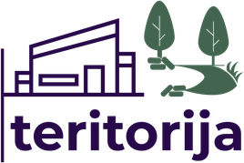

01
Soli
Atpūtai publiskā vidē

Sazināties →Pārdomātas vides labākai rītdienai
Āra mēbeles, velo infrastruktūra, rotaļu laukumi un ilgtspējīgi risinājumi mūsdienu videi.
Ilgtspējīgi
risinājumi
Eiropas
kvalitāte
Vide cilvēkiem
Par Teritorija.lv
Mēs ticam, ka labi veidota ārtelpa iedvesmo, vieno cilvēkus un padara pilsētas un kopienas dzīvojamākas. Teritorija.lv nodrošina kvalitatīvus, ilgtspējīgus un pārdomātus labiekārtošanas risinājumus no vadošiem Eiropas ražotājiem.
Uzzināt vairāk →
Soli, galdi, urnas un puķu kastes publiskai un privātai ārtelpai.
ZANO · URBASTYLE · GOVA PLAST
Statīvi, nojumes un servisa stacijas ikdienas lietošanai.
SAWO · ZANO
Sertificēti rotaļu un aktivitāšu risinājumi dažādām vecuma grupām.
FreeKids · OUT-SIDER
Pārstrādāti materiāli un viedie ārtelpas elementi.
GOVA PLAST · ZANOProjekts · vide · termiņš
+Ražotāji · materiāli · komplektācija
+Specifikācija · rasējumi · detaļas
+Cena · termiņš · piegāde
+Ražotāji, kuru produktus pazīstam un varam piemeklēt konkrētai videi.
Pastāsti par vietu, vajadzību un termiņu. Palīdzēsim nonākt līdz piemērotam risinājumam.